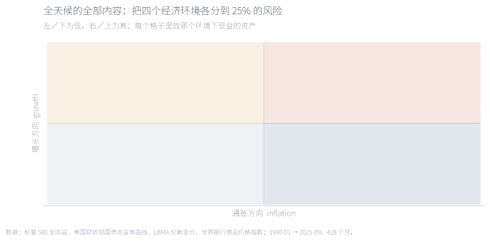
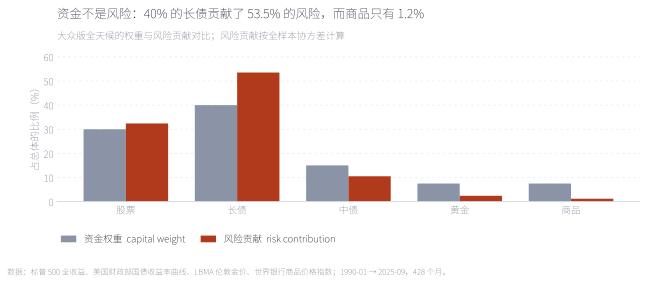
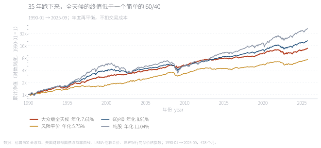
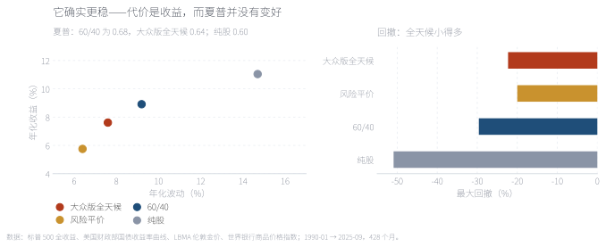
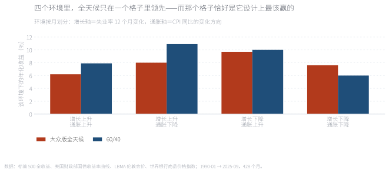
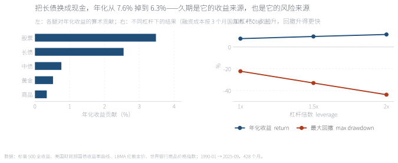

「不看宏观、不预测，也能做出穿越周期的组合」是这个行业里最诱人的一句话。本文用 1990-01 至 2025-09 共 428 个月的美国数据检验它——结论是它做到了前半句，没做到后半句。大众版全天候（30% 股票、40% 长债、15% 中债、各 7.5% 黄金与商品）的年化 7.6%、波动 7.6%、最大回撤 −22.3%，确实比 60/40 稳得多（9.2% 波动、−29.6% 回撤）；但它的收益更低（8.9%）、夏普也更差（0.64 对 0.68）。更关键的是，它并没有做到「环境中性」：40% 的长债贡献了 53.5% 的风险，而商品腿只占 1.2%。 "You don't need to forecast macro to build a portfolio that survives every cycle" is the most seductive line in this industry. We test it on 428 monthly US observations from January 1990 to September 2025. The first half holds; the second does not. The retail All Weather portfolio — 30% equities, 40% long bonds, 15% intermediate bonds, 7.5% each gold and commodities — returned 7.6% a year with 7.6% volatility and a −22.3% maximum drawdown, far steadier than a 60/40 (9.2% volatility, −29.6% drawdown). But it earned less (8.9%) and its Sharpe ratio was lower (0.64 versus 0.68). More importantly it is not environment-neutral: a 40% long-bond weight contributes 53.5% of the risk, while commodities contribute 1.2%.
关键词 全天候 · 风险平价 · 风险预算 · 四象限 · 久期 · 杠杆Keywords All Weather · risk parity · risk budgeting · economic environments · duration · leverage
先说一个最常见的误解：全天候不是「四等分资金」，而是「四个经济环境各占 25% 的风险」。它的框架来自 Ray Dalio：把经济状态按 增长上升／下降 × 通胀上升／下降 分成四格，每个格子里放进在那种环境下受益的资产——增长上升放股票和信用债，增长下降放名义债券，通胀上升放通胀挂钩债、商品与黄金，通胀下降放名义债券和股票。

这张图不是回测，是它的设计说明——先看清主张，才谈得上检验。关键在于分母是风险不是资金：债券的波动只有股票的四分之一左右，所以要让四个格子风险对等，要么让债券的资金权重远大于股票，要么整体加杠杆。这也解释了为什么机构版需要借钱，而大众版只能靠堆债券权重来近似。
This is not a backtest but the design statement — the claim has to be stated before it can be tested. The denominator is risk, not capital: because bonds are roughly a quarter as volatile as equities, equalising risk across environments requires either far larger bond weights or leverage.
来源：根据全天候的公开描述整理。Source: compiled from the public description of the strategy.
市面上流传的"全天候"其实是两样不同的东西：机构版是风险平价加杠杆，真实持仓从不公开；大众版是那个被写成书、传播最广的简化版——30% 股票、40% 长债、15% 中债、各 7.5% 黄金与商品，不加杠杆。本文测的是大众版，因为那是普通人真正能照着做的版本。

按全样本协方差分解，40% 的长债贡献了 53.5% 的组合风险，15% 的中债贡献 10.5%，而两支各 7.5% 的通胀资产——黄金 2.4%、商品 1.2%——加起来不到 4%。「四个环境各占 25% 风险」这件事，在大众版里并没有发生。原因很直接：没有杠杆时，你无法把债券的风险抬到股票的水平，只能靠加大它的资金权重，而这样做出来的组合，风险其实集中在一两支资产上。
By full-sample variance decomposition, a 40% long-bond weight contributes 53.5% of portfolio risk, while the two inflation assets — gold at 2.4% and commodities at 1.2% — sum to under 4%. The "25% of risk per environment" simply does not happen in the unlevered version.
来源：本文计算，全样本协方差。Source: author's calculations, full-sample covariance.
样本为 1990-01 至 2025-09 共 428 个月。六条腿分别是：股票＝标普 500 全收益；长债＝30 年期美国国债（久期按 15 近似）；中债＝10 年期（久期 7.5）；黄金＝LBMA 伦敦金价；商品＝世界银行商品价格指数（Total Index，含能源、金属与农产品）；现金＝3 个月国库券。所有组合按年度再平衡，年内权重固定。
对照组包括：风险平价（用 36 个月滚动协方差求等风险贡献权重，每年 1 月重算——刻意不使用未来信息）、60/40（60% 股票 + 40% 中债）与纯股。需要说明的是，本文检验的是全天候的公开描述，不是任何机构的真实持仓——这是这类研究必须写清楚的前提，否则就是对着影子打拳。

对数刻度，所以斜率就是年化增速。全天候（红）的线最平——它确实更稳；但 60/40（蓝）在它上方，纯股在最上方。35 年下来，1 元变成约 13.7 元（全天候）、21.0 元（60/40）、41.9 元（纯股）。这不一定说明全天候不好——它的风险更低——但足以说明一件事：「全天候」这个名字容易被读成"收益也不错"，而它在数据里并不是。
On a log scale the slope is the growth rate. All Weather is the flattest line — genuinely steadier — but the 60/40 sits above it and equities above that.
来源：本文回测，年度再平衡，不扣交易成本。Source: author's backtest, annual rebalancing, before transaction costs.

左图里全天候落在最左下——波动 7.6% 换成 7.6% 的年化；60/40 在它右上方，波动 9.2% 换 8.9%。右图是它真正的优势：最大回撤 −22.3%，而 60/40 是 −29.6%、纯股是 −50.9%。所以准确的表述是：它用 1.3 个百分点的年化，买了 7 个百分点的回撤改善。夏普上这笔交易并不划算（0.64 对 0.68），但对一个受不了深回撤的投资者，它可能仍然值得。
All Weather sits bottom-left; the 60/40 is up and to the right. Its real edge is the drawdown: −22.3% against −29.6% and −50.9%. In Sharpe terms the trade is not favourable (0.64 versus 0.68) — but for someone who cannot sit through a deep drawdown, it may still be worth it.
来源：本文回测；夏普以 3 个月国库券为无风险利率。Source: author's backtest; Sharpe uses three-month T-bills as the risk-free rate.
这是这篇的核心检验。如果全天候真的"环境中性"，那么它在四个格子里的表现应该接近。做法是：增长轴用失业率的 12 个月变化（下降＝增长上升），通胀轴用 CPI 同比的变化方向（上升＝通胀上升）——两条轴都不使用资产价格，避免循环论证。然后把 428 个月分进四个格子。

全天候在四格里的年化是 6.2 / 8.0 / 9.7 / 7.6，最高与最低差 1.6 倍；60/40 是 7.9 / 10.9 / 10.0 / 6.0，差 1.8 倍——全天候确实更均衡一些，但没有质的变化。真正的差别在结构上：它只在「增长下降·通胀下降」领先 60/40 1.6 个百分点，「增长下降·通胀上升」基本持平（−0.3），两个「增长上升」的格子分别落后 1.7 与 2.9 个百分点。也就是说，它把注押在了"增长转弱"上——那是债券真正发挥作用的环境，也正好对应它 53.5% 的风险集中在长债这件事。
All Weather ranges from 6.2% to 9.7% across the four cells; the 60/40 from 6.0% to 10.9%. It is somewhat more balanced but not qualitatively so. The structural point: it leads the 60/40 in only one of the four cells (+1.6 points) and trails by 0.3, 1.7 and 2.9 points in the other three — the opposite of "neutral".
来源：本文计算；环境划分不使用资产价格。Source: author's calculations; the classification uses no asset prices.

左图是各条腿对年化的算术贡献：股票 3.5 个百分点（资金 30%）、长债 2.6（资金 40%）、中债 0.8、黄金 0.5、商品 0.3。30% 的股票贡献了最多收益，40% 的长债贡献了最多风险——这就是大众版的真实结构。右图是加杠杆的结果：1.5 倍的年化升到 9.6%，但最大回撤扩到 −33.1%，已经比 60/40 的 −29.6% 更深；2 倍时回撤达到 −43.8%。把长债换成现金（反事实）年化从 7.6% 掉到 6.3%——久期既是它的收益来源，也是它的风险来源，两者是同一件事。
Attribution: equities contribute 3.5 points of return on a 30% weight; long bonds 2.6 points on 40% — and 53.5% of the risk. Leverage at 1.5x lifts the return to 9.6% but the drawdown to −33.1%, deeper than the 60/40. Replacing long bonds with cash cuts the return to 6.3%: duration is the return source and the risk source at once.
来源：本文计算；融资成本按 3 个月国库券 + 50bp。Source: author's calculations; financing at three-month T-bills plus 50bp.
把股票权重从 30% 往上拖，其余四条腿按原版比例缩放（也就是保持"债券为主"的结构）。可以清楚看到一条规律：年化和回撤几乎同步上升——拖到 60%，收益接近 60/40，但回撤也追上了它；拖到 90%，就更像纯股。这个交互想说的不是"哪个权重最好"，而是：全天候给出的那条"低回撤"曲线，不是免费的，它的价格就写在收益那一栏里。
Drag the equity weight up; the other four legs scale proportionally. Return and drawdown rise almost together — at 60% you get close to a 60/40's return and its drawdown. The point is not which weight is best, but that All Weather's smoother path has a price, and the price is in the return column.
来源：本文回测，年度再平衡，不扣交易成本。Source: author's backtest, annual rebalancing, before costs.
回到开头那句话：「不看宏观、不预测，也能做出穿越周期的组合」。前半句成立——全天候确实不需要预测，四个环境的风险均衡在逻辑上是自洽的，数据里它也真的更稳（波动 7.6% 对 9.2%，回撤 −22.3% 对 −29.6%）。后半句要打折扣：它在 35 年里没有跑赢一个简单的 60/40，夏普还略低；所谓"环境中性"在风险结构上并不成立（长债占 53.5%），在收益上也只有一格占优（还是最不起眼的那格）。
更准确的表述是这样：全天候是一台"把风险从股票挪到债券"的机器，而不是一台"消除环境依赖"的机器。它做的事情是把组合的收益来源从股权溢价部分转移到期限溢价上——所以它在增长转弱、利率下行的环境里舒服，在增长强劲、利率上行的环境里吃力。过去 35 年债券刚好经历了一轮大牛市，这段时间它尚且只做到这个程度；如果未来是 1980 年前那种利率上行的环境，这个结构会更难受。要拿回收益，就得加杠杆——而 1.5 倍杠杆的回撤（−33.1%）已经超过了它想要规避的那个 60/40。
最后是边界。本文检验的是公开描述的版本，不是任何机构的真实持仓，真实策略在资产选择、期限与择时上都可能不同；商品腿用的是世界银行价格指数，不含展期收益，而真实商品投资大多通过期货获得（这会显著改变结果）；债券用收益率曲线近似，未计入真实基金费率；交易成本未计。这些都不改变主结论的方向，但会让具体数字发生位移。
Full English version below.
Question. "You don't need to forecast macro to build a portfolio that survives every cycle." We test the public description of the All Weather portfolio — not any institution's actual holdings — on 428 monthly US observations from January 1990 to September 2025.
Result 1 — the framework. Four economic environments (growth rising/falling × inflation rising/falling), each allocated 25% of risk rather than capital. Because bonds are roughly a quarter as volatile as equities, equalising risk requires either very large bond weights or leverage. The retail version chooses the former and skips the leverage.
Result 2 — the risk budget does not hold. Capital weights of 30/40/15/7.5/7.5 produce risk contributions of 32.4/53.5/10.5/2.4/1.2. Long bonds dominate; the two inflation assets together contribute under 4%.
Result 3 — over 35 years it is steadier but not better. All Weather: 7.6% return, 7.6% volatility, −22.3% drawdown, Sharpe 0.64. The 60/40: 8.9%, 9.2%, −29.6%, Sharpe 0.68. Equities: 11.0%, 14.7%, −50.9%, Sharpe 0.60. It buys a seven-point improvement in drawdown for 1.3 points of return.
Result 4 — it is not environment-neutral. Sorting months by the twelve-month change in unemployment and the direction of year-on-year inflation, All Weather leads in only one of the four cells (+1.6 points) and trails in the other three (−0.3, −1.7, −2.9).
Result 5 — duration is both the source and the risk. Equities contribute 3.5 points of return on a 30% weight; long bonds 2.6 on 40%. Replacing long bonds with cash cuts the return to 6.3%. At 1.5x leverage the return rises to 9.6% but the drawdown reaches −33.1%, deeper than the 60/40 it was meant to improve on.
Implication. All Weather is a machine for moving risk from equities to bonds, not a machine for removing dependence on the environment. It shifts the return source from the equity premium toward the term premium, which is comfortable when growth slows and rates fall and uncomfortable when the reverse happens. Limitations: we test the public description; the commodity leg is a price index without roll yield; bonds are approximated from the yield curve; costs are excluded.
数据。标普 500 全收益（Yahoo Finance ^SP500TR，月度）；美国财政部国债收益率曲线（3 Mo / 10 Yr / 30 Yr，月末值，1993 与 2001 年个别月份 30 年期或 3 个月未印，按相邻月线性插值补齐）；LBMA 伦敦金价月序列（datahub.io）；世界银行商品价格指数 Total Index（Pink Sheet，Monthly Indices 表）；美国 CPI-U 与美国失业率（BLS，CUUR0000SA0 / LNS14000000）。样本 1990-01 至 2025-09，共 428 个月（BLS 在 2025-10 无数据，故截至 9 月）。访问日期 2026-10-04。
做法。长债＝30 年期收益率 ÷ 12 − 久期 15 × 收益率变动；中债＝10 年期收益率 ÷ 12 − 久期 7.5 × 变动；现金＝3 个月收益率 ÷ 12；其余用价格变动。组合按年度再平衡（年内权重固定）。风险平价用 36 个月滚动协方差、迭代求等风险贡献权重，每年 1 月重算，不使用未来信息。环境划分：增长轴＝失业率 12 个月变化（≤0 为增长上升），通胀轴＝CPI 同比的变化方向（≥0 为通胀上升）。
未计入。交易成本、税费与汇率；商品腿为价格指数，不含期货展期收益——真实商品投资多通过期货，展期收益会显著改变结果；债券用收益率曲线近似，未计入真实基金费率；杠杆部分未计入强平与追加保证金风险。
代码。tools/fetch_allweather_raw.py（取数）、tools/make_allweather_data.py（全部统计）、tools/make_allweather_figs.py（六张图）、tools/make_allweather_note.py（本页与交互图）。固定输入可完全复现。
Data. S&P 500 total return (Yahoo Finance ^SP500TR, monthly); US Treasury yield curve (3-month / 10-year / 30-year, month-end; a few months in 1993 and 2001 lack the 30-year or 3-month print and are filled by linear interpolation between adjacent months); LBMA London gold price, monthly (datahub.io); World Bank commodity price index, Total Index (Pink Sheet, Monthly Indices); US CPI-U and unemployment rate (BLS, CUUR0000SA0 / LNS14000000). Sample: January 1990 to September 2025, 428 months. Accessed 4 October 2026.
Method. Long bonds = 30-year yield ÷ 12 − duration 15 × change in yield; intermediate bonds = 10-year yield ÷ 12 − duration 7.5 × change; cash = 3-month yield ÷ 12; other legs from price changes. Portfolios are rebalanced annually (weights fixed within the year). Risk parity solves for equal risk contributions using a 36-month rolling covariance, recomputed each January with no look-ahead. Environment classification: growth axis = twelve-month change in unemployment (≤0 means rising growth); inflation axis = direction of the change in year-on-year CPI (≥0 means rising inflation).
Not included. Transaction costs, taxes and FX; the commodity leg is a price index without roll yield, whereas real commodity exposure is mostly futures-based and roll yield matters; bonds are approximated from the yield curve without fund fees; the leverage exercise ignores margin calls.
Code. tools/fetch_allweather_raw.py, tools/make_allweather_data.py, tools/make_allweather_figs.py, tools/make_allweather_note.py.
一、"全天候"这个名字测的不是一家机构的真实组合。Bridgewater 从不公开持仓，本文测的是公开流传的简化版。任何声称"回测了全天候"的研究，都应该先说明它测的是哪一个版本——否则结论无法比较。
二、商品的展期收益。世界银行指数是价格指数。真实的商品投资通过期货持有，长期存在展期收益（多数为负），这会明显拉低商品腿的贡献。本文的商品腿因此偏乐观，但它的权重与风险贡献都不到 2%，不影响主线。
三、起点决定了债券的角色。样本从 1990 年开始，恰好覆盖了美国利率从高位回落到零再抬升的完整周期。若从 1980 年开始，债券腿的贡献会大得多；若从 2020 年开始，它会很难看。全天候是一个对利率周期高度敏感的结构。
One: the name does not identify one portfolio. Bridgewater does not publish holdings; we test the widely circulated simplified version. Any study claiming to backtest "All Weather" should say which version first, or its results are not comparable.
Two: commodity roll yield. The World Bank series is a price index. Real commodity exposure is held via futures, where roll yield is typically negative over time and would reduce the leg's contribution. Our commodity leg is therefore flattering, though at under 2% of risk it does not drive the result.
Three: the start date decides the bond's role. The sample begins in 1990 and spans a full cycle of US rates falling to zero and rising again. Starting in 1980 would make the bond leg far more valuable; starting in 2020 would make it look terrible.